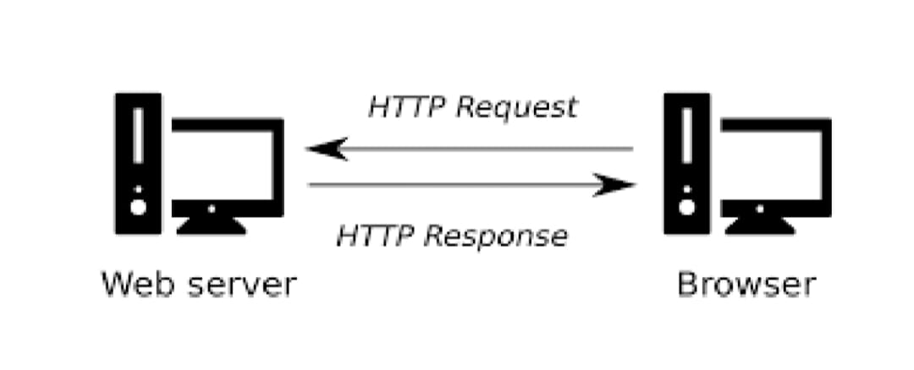
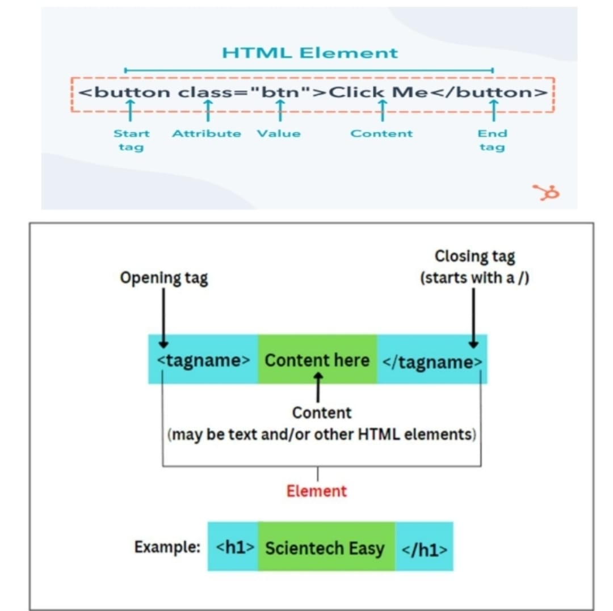
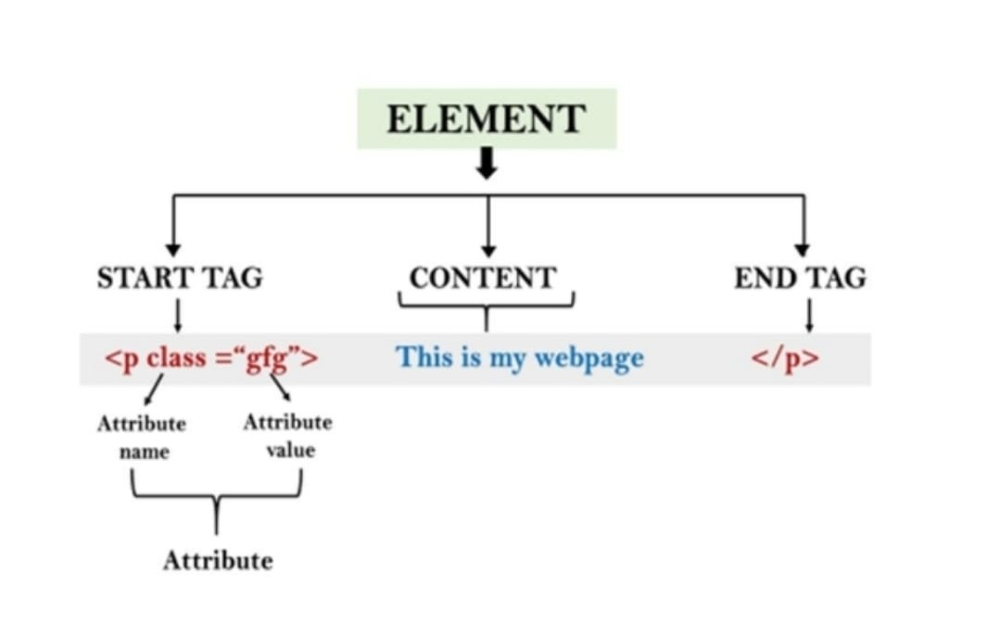
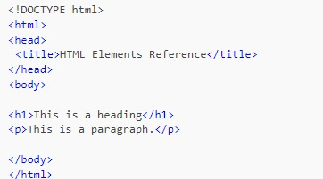
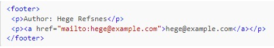

<body style="background-color: #A95C68;">
    <center><h1>this is chapter 2</h1></center>
    <hr align="center" width="1000" color="black" size="4">

    <h1><u>Instructions Files creations </u></h1>
     


    <p><b> A clint can be a divice or a machine</b></p>
	<p><b> A clint program runs on the local machine from the server</b></p> 

    <h1><u>HTML Elements</u></h1>
     <br>
     

    

    <h1><u>Title & Footer</u></h1>
     <ol type="a">
        <li><b>HTML Titlt Element</b></li>
		
        <li><b>HTML Footer element</b></li>
		
        
     </ol>
    
    
      

</body>